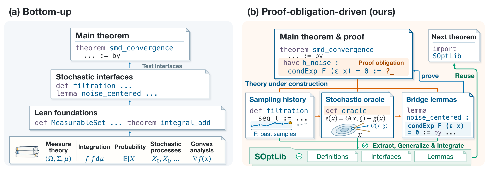
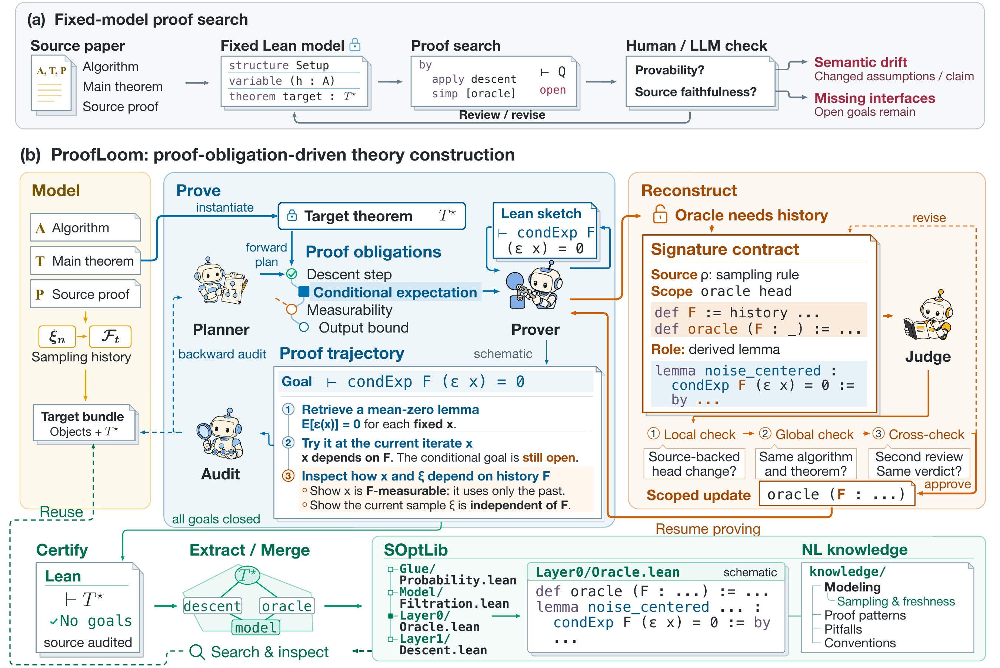
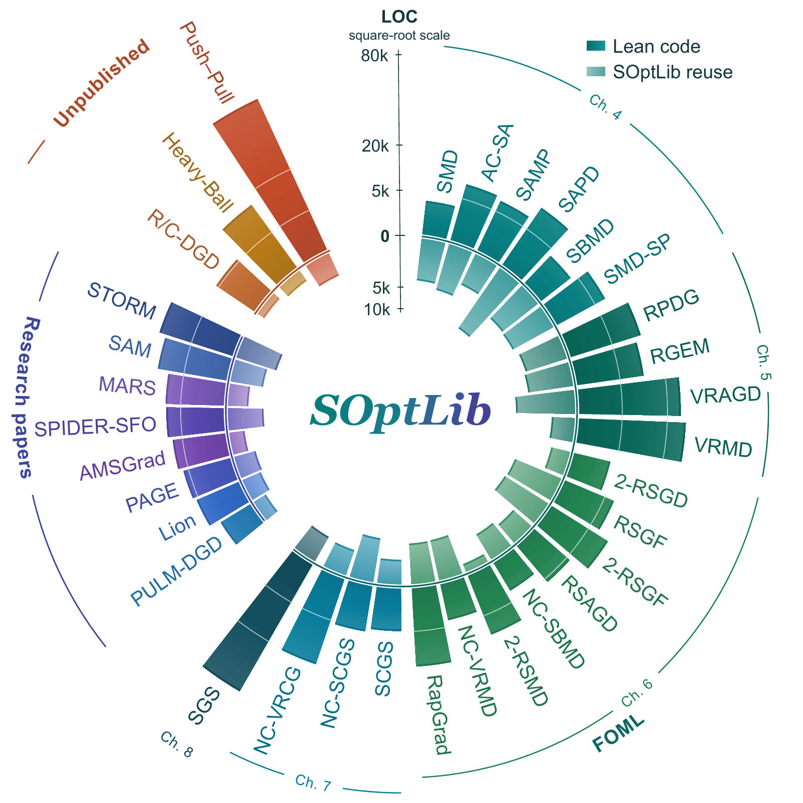

From research proofs
to reusable theory.
In briefProofLoom turns stochastic optimization papers into Lean developments by building the mathematics demanded by their proofs. It achieves human ratings of 6.3/7 on textbook tasks and 6.4/7 on research-paper tasks, ahead of six baselines. The broader collection spans 33 developments and roughly 490,000 lines of algorithm-local Lean source, grows a reusable theory library, and exposes 28 source discrepancies across 22 developments.
A convergence proof may occupy only a few pages. Making it checkable by a proof assistant can require thousands of lines of mathematics: probability spaces, sampling histories, stochastic oracles, analytical inequalities, and the arguments connecting them. Much of this infrastructure is implicit in the paper.
ProofLoom starts from the result we want to prove. Each open Lean goal helps decide which definition, interface, or lemma to build next. As the proof develops, the system can repair its mathematical model, check the repair against the source, and turn the resulting theory into reusable infrastructure for later algorithms.
The output is an inspectable body of mathematics: algorithm definitions, formal proofs, shared library results, and evidence about steps in the original argument that need clarification or correction.
01A proof can reveal what the model is missing
Consider a familiar step in stochastic optimization. An oracle is unbiased at every fixed query:
The convergence proof needs the corresponding identity at the random iterate:
Here, the iterate depends on earlier samples, while the current sample must be fresh relative to that history. To justify the step, the formal model needs to express those relationships, together with the relevant measurability and integrability conditions.
If the initial Lean model omitted the sampling history, searching harder for a proof will eventually run into that omission. The open goal identifies the missing structure: how the iterate depends on the past, how the next sample is drawn, and the bridge from a fixed-query expectation to a conditional one.

This is proof-obligation-driven theory construction. The target theorem provides a concrete test for whether an interface is useful, whether a lemma is strong enough, and whether the algorithm model expresses the dependencies its proof requires.
02How ProofLoom constructs the theory
The workflow has three stages: Model → Construct → Learn.
Model: represent the algorithm and its target result
ProofLoom begins with the source algorithm, its assumptions, its theorem, and its supporting argument. It builds Lean objects for the updates and randomness, then states the result to be proved. Source review checks that these objects represent the intended mathematics.
Construct: let the proof guide the next step
Planner expands the source argument into intermediate claims. Prover constructs the corresponding Lean proofs. Audit traces the actual dependencies of the formal proof back through those claims, locating missing links or proof branches that do not support the intended argument.
When an obligation blocks progress, the system investigates what is missing: a supporting lemma, a better proof route, or a change to the mathematical model. Model changes pass through signature contracts. A contract records the declarations being changed, the supporting source passage, and the new facts that still need proofs. An independent Judge reviews the proposed change against that contract and the original result.
For the stochastic-oracle example, adding a sampling history can make an implicit source dependency explicit. The conditional expectation identity then remains a theorem to establish. This separation lets the representation improve while keeping the mathematical work visible.
Learn: make the construction useful again
After certification, ProofLoom extracts reusable definitions and lemmas, generalizes their interfaces, and checks them in the original development. Accepted additions enter SOptLib, together with records of modeling decisions, successful proof routes, failed attempts, and conditions for reuse.

A concrete example: connecting two Gaussian representations
SAM's generalization argument needs a Gaussian KL calculation. An available theorem expresses the distributions in Euclidean coordinates; the algorithm development represents them as affine transformations of a standard Gaussian on an inner-product space.
Using the theorem requires a mathematical bridge between those representations. ProofLoom makes the Euclidean measurable structure explicit, identifies the Gaussian laws under an orthonormal coordinate map, and proves that KL divergence is preserved by that change of coordinates. The resulting identity supplies the Gaussian calculation used downstream in the proof.
This is the kind of infrastructure a short paper calculation can conceal: a familiar formula becomes usable only after the representations, assumptions, and transport argument fit together. The SAM development contains the formal construction.
03Results across textbook and research-paper tasks
We compare seven systems on 15 tasks: ten algorithms from Lan's First-order and Stochastic Optimization Methods for Machine Learning (FOML), and five research-paper algorithms — AMSGrad, STORM, SPIDER, PAGE, and SAM. Their target results include regret bounds, convergence guarantees, and a PAC-Bayes generalization bound.
Each system–task pair receives a cumulative 48-hour generation budget, including resumed runs. For the five research-paper tasks, ProofLoom uses one fixed SOptLib snapshot containing only mathematics and construction records accumulated from FOML developments.
Human evaluation
Human evaluation uses a 1–7 rubric for source faithfulness and proof completeness, with blind assessment and expert adjudication of disagreements.
| System | FOML · 10 tasks | Research papers · 5 tasks |
|---|---|---|
| Raw Codex | 2.8 | 2.8 |
| Raw Codex (Goals) | 3.0 | 3.0 |
| OpenGauss | 3.5 | 3.8 |
| LeanMarathon | 4.4 | 4.2 |
| Trellis | 4.5 | 4.8 |
| Archon | 4.9 | 5.0 |
| ProofLoom | 6.3 | 6.4 |
Table 1. Mean human ratings; higher is better.
ProofLoom improves on the strongest baseline by 1.4 points in each source group. The research-paper results show that the full system remains effective when moving beyond the textbook algorithms used to build its shared library.
Model-based evaluation gives a consistent group-level result: ProofLoom achieves the highest mean in all 16 combinations of source group, evaluation protocol, and judge. The two protocols, G-Eval and FidelityEval, use a 0–100 scale; each is applied by four model judges. The evaluation documentation contains the full score tables.
What the two review mechanisms contribute
An ablation examines 43 recorded obstructions under three configurations, for 129 runs. Reviewers assess whether the system correctly diagnoses the obstruction and proposes a repair faithful to the source.
| Configuration | Correct diagnosis and repair direction | Unresolved | Incorrect repair |
|---|---|---|---|
| Without Judge | 29 | 8 | 6 |
| Without Planner–Audit | 29 | 13 | 1 |
| Full ProofLoom | 33 | 9 | 1 |
Table 2. Counts across the same 43 cases. The labels assess diagnosis and proposed repair.
Removing Judge increases incorrect repairs from one to six. Removing Planner–Audit leaves more cases unresolved. Together, the mechanisms help the system identify the mathematical obstacle and keep its proposed solution tied to the intended result.
04The artifacts: a growing body of optimization theory
The broader research collection contains 33 algorithm developments: 22 from FOML, eight from research papers, and three from research notes. It includes all 15 benchmark tasks and 18 additional developments.
The paper's census records 490,693 lines of algorithm-local Lean source. Separately, its SOptLib snapshot contains 109,634 source lines, with 2,399 declarations, including 1,983 theorems. These physical-line counts include comments and blank lines; algorithm code and shared library code are counted separately.

The collection reaches from stochastic mirror descent, accelerated methods, and variance reduction to adaptive optimizers such as AMSGrad, Lion, and MARS, as well as distributed methods and research-note developments such as Push–Pull, Heavy-Ball, and R/C-DGD.
The inner bars make the shared mathematics visible. A development can draw on previously constructed probability interfaces, oracle bounds, proximal inequalities, or analytical transport results. Extraction checks those results in their original setting before making them available to later proofs.
| SOptLib layer | What it provides |
|---|---|
| Glue | Connections to Mathlib's probability, integration, martingale, and analysis interfaces |
| Model | Shared objects such as sampling histories, stochastic oracles, and Bregman divergences |
| Layer 0 | Problem properties and oracle estimates, including noise bounds |
| Layer 1 | Descent arguments, proximal inequalities, telescoping steps, and complexity bounds |
Construction records preserve the reasoning behind the code: which sampling relation justified a conditional identity, why a representation failed, and which assumptions make a lemma reusable. Later developments can retrieve both a theorem and the experience needed to apply it.
The public repository contains 32 developments, with source files and per-development verification records. The atlas additionally includes the unpublished Push–Pull research development.
05What formalization reveals about the source mathematics
Making every dependency explicit also tests the original argument. Across the collection, the source audit records 28 independent discrepancies affecting 22 developments: 25 in original sources and three in revised versions. They include incorrect formulas, missing proof steps, and mismatches between an algorithm and the assumptions used in its analysis.
Two examples show the level at which these findings arise.
SAM: a premise at one noise scale is used at another
SAM's generalization theorem assumes that Gaussian perturbations at scale do not reduce the population loss. The proof later chooses a smaller scale,
and needs the same property at . That implication can fail.
For the smooth bounded loss
the value at zero is . With , , and , the Gaussian averages are:
| Quantity | Value | Comparison with the unperturbed loss |
|---|---|---|
| Unperturbed loss | 0.400 | Reference |
| Average at the assumed scale | ≈ 0.473 | Higher |
| Average at the scale used in the proof | ≈ 0.382 | Lower |
The stated premise holds at the first scale, while the proof needs it at the second. The corrected formulation makes the selected-scale premise explicit. This pinpoints the missing condition in the argument and supplies a concrete counterexample to the cross-scale implication.
A smoothness argument steps outside its domain
A lemma used in Lan's variance-reduced analysis introduces a gradient step that can leave the feasible set. The argument then uses smoothness at that point, although smoothness was only assumed on the original set.
For variance-reduced mirror descent, the formal repair constructs a cocoercivity argument on the relative interior, derives the required Bregman inequality, and extends it to the boundary. The repair states an additional condition: each component gradient's image on the relative interior is convex.
The VRMD development makes the new condition and the proof of the bridge inspectable. Formalization identifies the exact step that exceeds the stated hypotheses and provides a checked route to a corrected result.
06Explore the mathematics
The ProofLoom repository brings together the agent workflow, algorithm developments, source specifications, and SOptLib. Useful starting points include:
- A familiar algorithm: inspect AMSGrad, MARS, or PAGE.
- A detailed mathematical bridge: follow SAM's Gaussian construction.
- Reusable theory: browse SOptLib and the algorithm catalog.
Lean checks the formal derivations; source correspondence is assessed through the system's review process. The experiments study stochastic optimization, and extension to other mathematical domains remains an open direction.
The longer-term opportunity is cumulative: each research proof can leave behind reusable definitions, checked lemmas, and a more precise account of the mathematics on which the next proof will depend.